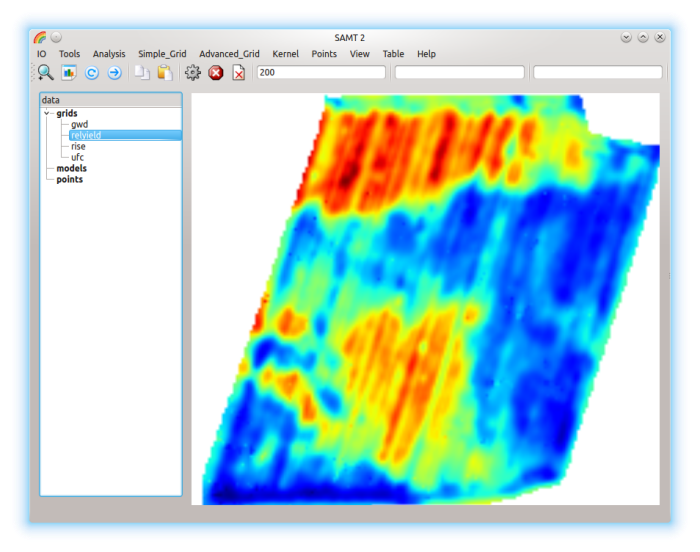
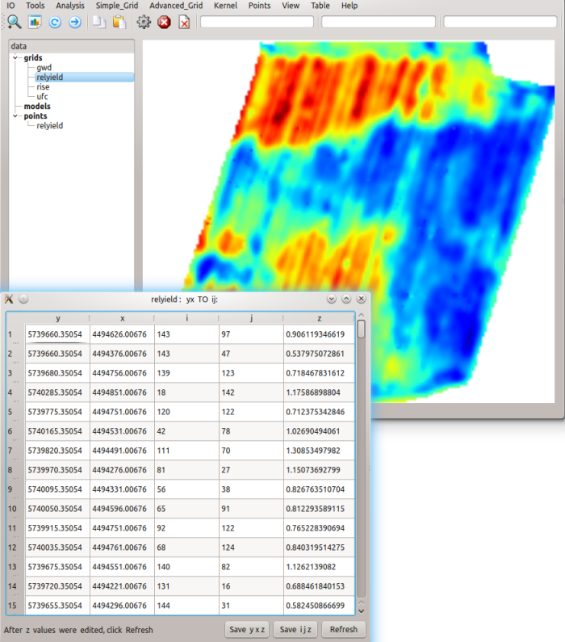
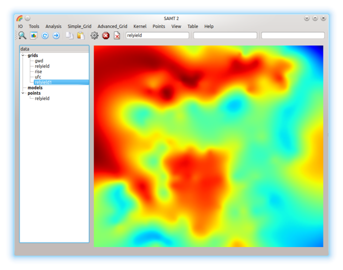
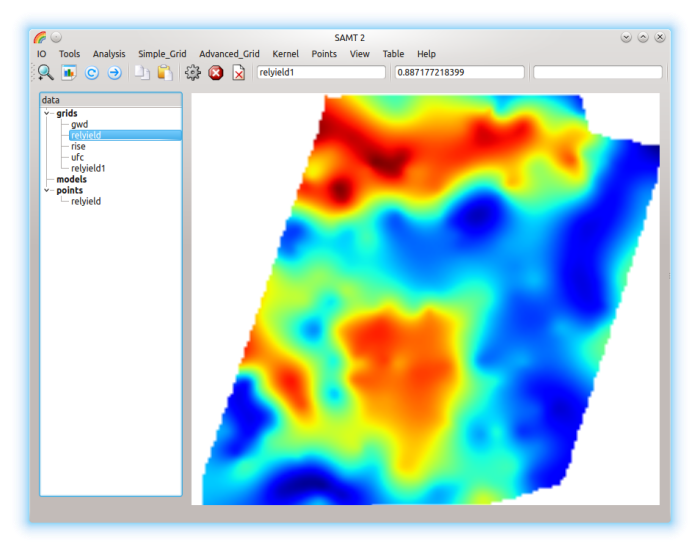
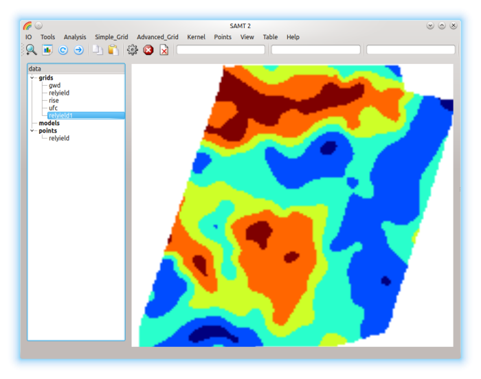

-
IO / HDF Open: load training.h5

- Set P1=200 , highlighted grid= relyield
Analysis: Samples Points relyield was produced.

- Set P1=relyield (grid),
highlighted points=relyield
Points: thin_plate
creates a new grid relyield1

- Set P1=relyield, highlighted=relyield1
Advanced_Grid: Combine_AND
combines two grids
- Set P1=relyield1, highlighted=relyield
Analysis: Corr
correlates two grids, Result P2=correlation coefficient

- Set highlighted grid=relyield1, P1=10 (default)
Simple_Grid: Class
classifies the grid into P1 classes

- Set P1=relyield1, highlighted=relyield
Analysis: Corr, Result P2=correlation coefficient
Back to top